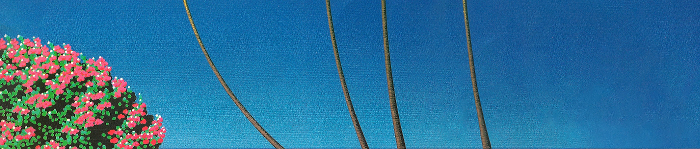

When Japan is undergoing post-war economic miracle, various artists take inspiration from foreign songs and created their own special blend of music. American pop songs of the 80s era, with a Japanese twist, while painting folksy pictures of life in Tokyo, a life of excess.
Many people who grew in the time where city pop was happening often associate it negatively to the bubble era. An era of consumerism and lavish lifestyle. However, now, void of such contexts, city pop has become a fresh perspective to music, or a time capsule towards Japan’s economic boom era. Takeuchi Mariya’s “Plastic Love” reaching millions of views in You-tube is one sign of the resurgence of interest in the genre. (with the help of the You-tube algorithm as well I guess…)